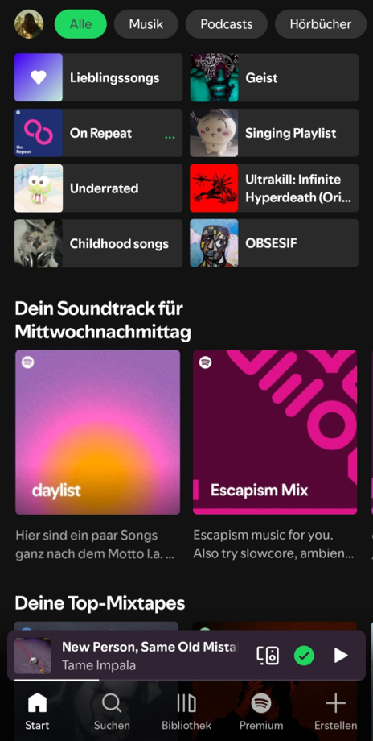
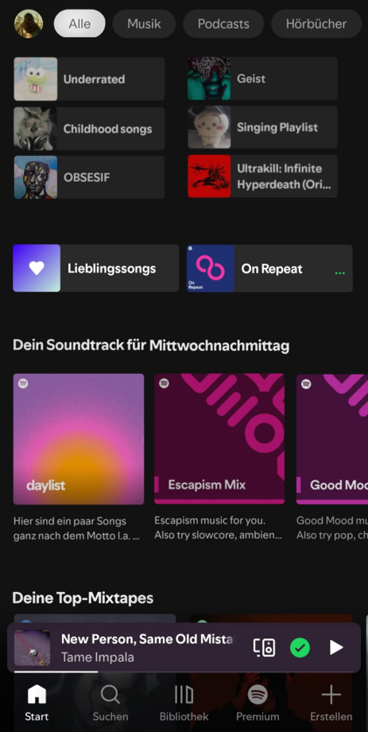
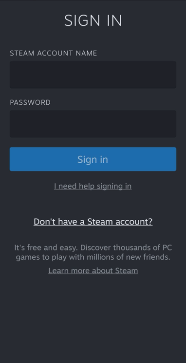
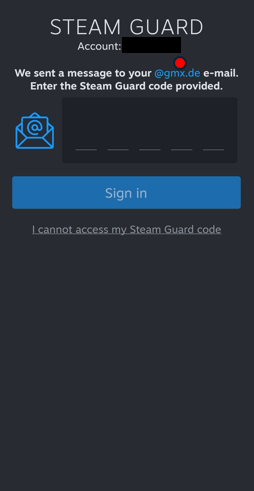
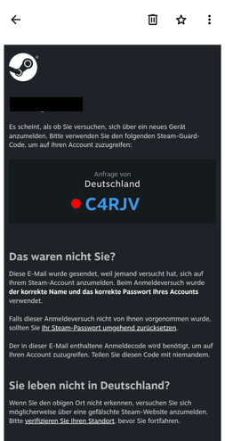
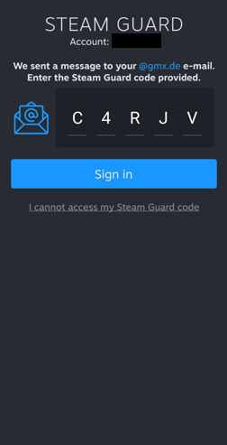
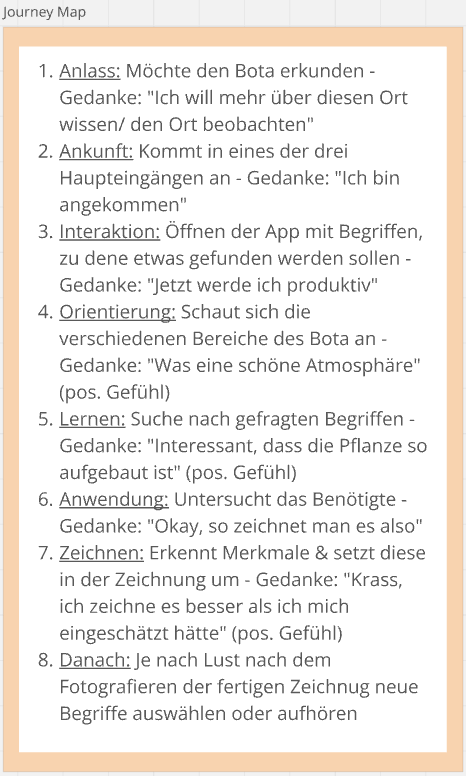
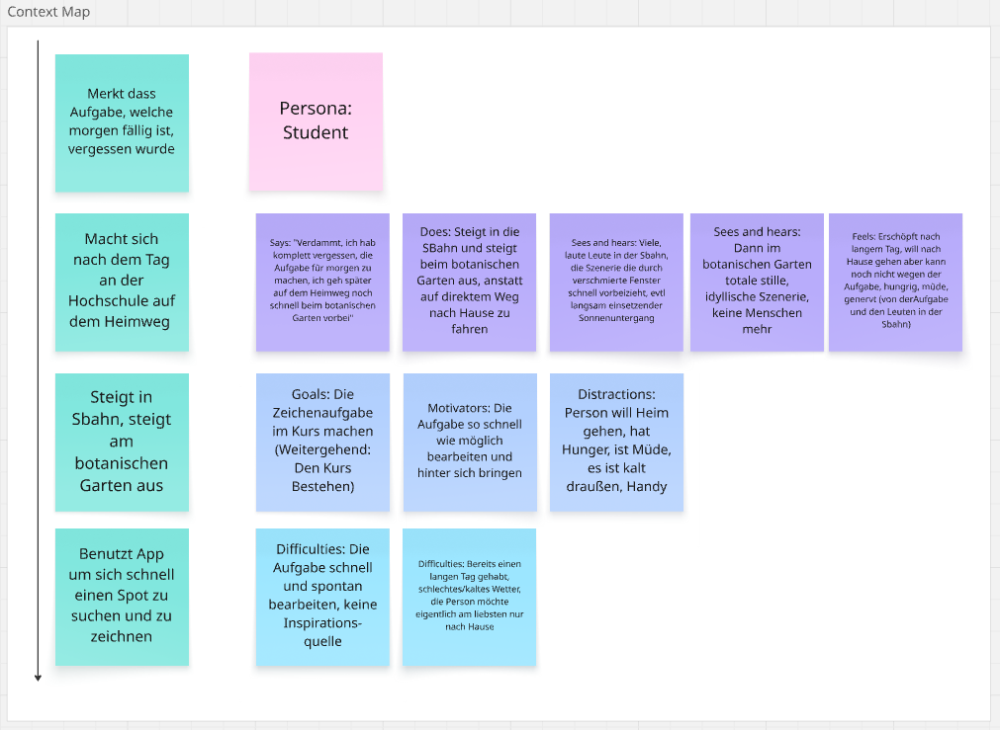

Diary: One Place, One Thing
Team: Rex, Vi, Zehra
Ort: Botanischer Garten, Ulm
Woche 1
Herangehensweise
Zunächst haben wir uns als Gruppe dazu entschlossen, alle individuellen Ideen für einen Ort,
eine lernbare Sache, und eine Zielgruppe zu finden. Bei der Zielgruppe waren wir uns direkt einig,
Studenten auszuwählen, die Hintergründe und natürliche Szenerien besser zeichnen möchten, da wir
nicht nur identische viele Anhaltspunkte zu uns selbst gefunden haben, sondern auch eine große
Brandweite an jungen Erwachsenen DM Studenten so gezielt erfassen. Die Entscheidung des Ortes viel
daraufhin auf den botanischen Garten, da dieser durch die natürliche Szenerie als auch den vielen
Insekten viele Möglichkeiten für das zeichnerische Üben gibt. Vor Ort sind uns die verschiedenen Szenerien,
also die Vielfalt aufgefallen. Überraschend war auch die Vielfalt der einzelnen Pflanzen selbst.
Nach dem Besuch wurden die fünf Fragen in einer Seite beantwortet.
Für die Lightning Demos haben wir als Lernapp "SimplyGuitar" zum Gitarre spielen lernen genommen
und als Guide ein Zeichnen-Guide um mehr über die Grundlagen über das Zeichnen zu lernen.
Da es das
erste Diary ist, ist zeitlich noch kein Feedback vom Dozenten möglich gewesen und Verbesserungen können
erst an der folgenden Vorlesung wahrgenommen werden.
Beschreibung des Ortes
Der Botanische Garten in Ulm ist ein Ort, der eine Vielzahl von Pflanzenarten beherbergt und eine ruhige, naturnahe Umgebung bietet. Dort gibt es nicht nur gibt es gute Sitzmöglichkeiten, sondern auch viele verschiedene Pflanzenarten, die man beobachten kann, was einen reichhaltigen Eindruck hinterlässt und dazu regt den Ort wieder zu besuchen.
Besondere Eindrücke
Die Kulisse ist im Botanischen Garten nicht nur angenehm, sondern spiegelt auch die Ruhe wieder. Vor Ort ist es leise und Idyllisch, sodass man den Fokus auf Details legen kann. Manchmal findet man jedoch Fahrzeuge auf Wanderwegen.
Problematiken
Eine Problematik, auf die wir gestoßen sind, war uns gemeinsam zusammen zu finden. Da wir am Mittwoch noch keine klare Idee vom Ort hatten, konnten wir an diesem Tag nirgendswo hingehen. Jedoch sind wir am Montag, nachdem wir uns zudem davor auf einen Ort geeinigt haben, zusammen dort hingefahren und haben den botanischen Garten eine Stunde lang beobachtet.
Woche 2
Die drei Aufgaben
Wir haben die 3 Aufgaben unter den Gruppenmitgliedern aufgeteilt. Jeder hat dann eigenständig zunächst seine Aufgabe bearbeitet, dann wurden die Ergebnisse in der Gruppe zusammengetragen und besprochen.
Die Interviews
Wir haben pro Person je 2 Interview-Partner gefunden, mit Fokus auf Studenten welche in unsere Zielgruppe passen.
Feedback und weitere Beobachtungen
Das Feedback des Profs war unter Anderem weitere Beobachtungen insbesondere zur Zielgruppe an unserem Ort anzustellen, was wir dann daraufhin getan haben. Uns ist vor Allem aufgefallen, dass ein Großteil der Leute, welche tatsächlich Interesse an dem Ort und den Pflanzen hatten ältere Leute oder Eltern mit Kindern waren. Jüngere Leute oder Studenten waren zwar vereinzelt vor Ort, allerdings waren diese eher auf den Liegen und Bänken zu finden, sich unterhaltend. Wir haben hier einen Zusammenhang zur Nähe der Uni Gebäude gezogen. Wir haben daraufhin die Idee gehabt, mit unserem Produkt Studenten, welche sich ohnehin schon in der Nähe des botanischen Gartens befinden, und diesen auch teilweise in der Freizeit besuchen, den Ort selbst (die Natur, Pflanzenvielfalt, die Dinge die es dort zu beobachten und zu entdecken gibt) näher zu bringen, und dazu anzuregen mit seiner Umgebung zu interagieren, statt dort einfach nur zu verweilen.
Außerdem wurde vom Prof angemerkt, dass unsere Idee womöglich nicht für Personen jedes Fähigkeiten-standes ist, da es für Anfänger sehr schwer sein kann, Natur, Pflanzen und Szenerien einfach aus dem Stegreif heraus zu zeichnen. Wir haben daraufhin unsere Zielgruppe auf Studenten mit fortgeschrittenem Zeichenlevel eingeschränkt.
Problematiken
Eine Problematik, die wir hatten, war es, sich als Gruppe zusammenzufinden, hauptsächlich aufgrund von Krankheitsfällen. Vieles an Kommunikation wurde daher remote getätigt.
Aufgaben
Die Aufgaben wurden wie folgt verteilt: Rex hat den Blur Test erstellt, Zehra die Subtraction und Vi die Memory Tax-Audit.
Zunächst sieht man hier den Blur Test, vom Original auf 10%, 20% und anschließend 40%


Original Gruppen: Kopfzeile, Socken Aktion (extra Feld), Spende Bestätigung, Fußzeile
10% Blur Gruppen: Kopfzeile, Socken Aktion (extra Feld nicht mehr erkennbar), Spende Bestätigung, Fußzeile
20% Blur Gruppen: Kopfzeile, Kleines rotes Feld, Textfeld, Rote Zeile, Spende Bestätigung, Fußzeile
40% Blur Gruppen: Nur noch vereinzelnd Farben erkennbar. Zwei rote Felder, Ein leichtes grünes Feld
Daraufhin sieht man hier den Vorher-Nacher vergleich der Subtraction Aufgabe


Bei der Überarbeitung meines Spotify-Layouts habe ich mich vor allem auf die Prinzipien des Kontrasts und der visuellen Hierarchie und die damit verbundenen Größenverhältnisse fokussiert. Mein Ziel war dabei, Die Elemente "Lieblingssongs" und "On Repeat" als „Winner“ bzw als die wichtigsten Inhalte hervorzuheben, ohne diese zu verändern. Stattdessen habe ich die konkurrierende Elemente, also die „Losers“, abgeschwächt. Dafür habe ich zunächst den Kontrast verschiedener Elemente reduziert. Weniger wichtige Bereiche wurden beispielsweise durch eine weniger auffällige Farbgebung und einen geringeren Helligkeits- bzw. Farbkontrast zurückgenommen. Dadurch konkurrieren sie weniger stark um Aufmerksamkeit. Außerdem habe ich bei einigen Elementen die Größe reduziert. Weniger wichtige Inhalte nehmen dadurch weniger visuellen Raum ein und wirken gegenüber dem gewählten Hauptelement zurückhaltender. Der Blick wird direkt auf die wichtigsten Playlists gelenkt. Auch die Typografie habe ich genutzt, um die visuelle Hierarchie zu verändern. Beispielsweise können weniger wichtige Überschriften oder Texte durch eine geringere Schriftgröße und einer weniger dominanten Farbe wirken. Ich habe viel Kontrast in der Typografie verwendet, um die unwichtigen Sachen dunkler zu designen und somit in den Hintergrund zu bringen. Dadurch entsteht eine klarere Hierarchie zwischen den verschiedenen Informationsebenen.
Zum Schluss noch die Memory Tax-Audit Aufgabe




Der Nutzer meldet sich in der App an, danach wird ein Bestätigungs-Code an die Email-Adresse geschickt, welche mit dem Account verknüpft ist. Hier muss sich der Nutzer evtl. merken, welche Email-Adresse überhaupt zugewiesen ist. Das Interface könnte einen Button oder Link haben, welcher den Nutzer direkt zu seinem Postfach der richtigen Email-Adresse bringt.
Hier muss sich der Nutzer den Code aus der Email merken, um ihn dann in der App einzugeben. Hier könnte entweder in der Email selbst ein Button verbaut sein, welcher den Nutzer zurück zur App bringt und den Code automatisch ausfüllt, oder man könnte den zweiten Schritt komplett entfernen, indem die App registriert, dass ein Code auf dem Gerät eingegangen ist und diesen automatisch ausfüllt.
Woche 3
Die Aufgaben
Zwei Personen haben die Aufgaben Journey Map und Contest Map erledigt, während die dritte Person für das Diary zuständig war. Jeder hat zusätzlich noch jeweils ein Interview geführt.
Die Interviews
Interview von Zehra:
Zur Frage "Wie einfach/schwer fällt dir das Zeichnen von Natur?"
Antwort (2 Sätze):
Also ich mache das auch gerne eben so in der Freizeit, dass ich so ein paar Blümchen oder so mustermäßig mache.
Das finde ich auch immer so einer der angenehmsten Sachen zum Zeichnen auch tatsächlich, wenn ich einfach so frei was mache, weil mir langweilig ist. (...)
Zur Frage "Wie findest du die Idee, im botanischen Garten zu zeichnen":
Antwort (1 Satz):
Also ich muss ehrlich gestehen, ich hab noch nie so was gemacht, dass ich in der Öffentlichkeit so zeichne, aber ich hab das schon öfters mit beobachtet, auch so im Urlaub, dass irgendwer irgendwo so sitzt und irgendwas so abzeichnet mäßig und das fand ich immer total cool, das so zu sehen. (...)
Interview von Vi:
Zur Frage "Wie gehst du beim Zeichnen vor? "
Antwort (2 Sätze):
(...)
Also ich glaube schon, wenn mir jetzt so nicht unbedingt was einfällt und ich will es einfach machen, um zu üben, dann zeichne ich einfach irgendwas, was mich gerade umgibt und was ich einfach schön finde, weil ich finde, das ist auch so ein bisschen ein Weg einfach zu schätzen, was um einen rum ist.
Also zum Beispiel ich habe auch so ein Laub oder so ein schönes Blatt gezeichnet und so, sonst hätte ich das Blatt halt 100% wieder vergessen, aber jetzt ist es halt in meinem Skizzenbuch, das finde ich eigentlich schon ganz schön, so einfach seine Umwelt irgendwie anders wahrzunehmen und die dann auch zu schätzen.
Zur Frage "Wie findest du die Idee, im Bot. Garten zu zeichnen?":
Antwort (1 Satz):
Wunschvorstellungen, wie man sich immer im Hinterkopf hat und sich denkt: "Ach, das könnte ich mal machen",das Problem ist, dass man diese Dinge dann halt oft nicht macht, aber es klingt so erstmal sehr sehr schön, also sollte wahrscheinlich jeder einfach mal machen, aber man macht es halt dann doch nicht, weil der Alltag halt wieder und man nimmt sich die Zeit nicht und dann ist es halt doch schon wieder nachts um drei und da will ich dann vielleicht nicht mehr im Botanischen Garten zeichnen.
Interview von Rex:
Zur Frage "Wäre das ein Problem für dich, wenn du nicht so gutes Internet hättest?"
Antwort (2 Sätze):
Wenn ich alleine bin, muss ich schon echt ab und zu mal mein Handy checken und wenn ich da dann -also ich erwarte da jetzt nicht dass ich WLAN habe,- aber sollte halt schon gutes Internet haben. Wenn ich da jetzt irgendwie gar kein Netz hätte, würde das definitiv ausschlaggebend dafür sein, dass ich mich da entweder weniger oder gar nicht aufhalte.
Zur Frage "Ich habe ja vorhin schon ein bisschen was erzählt zu unserer Idee, zu unserem Projekt. Wenn du jetzt so hörst, es ist noch nicht so weit in der idee, aber was würdest du denn erwarten oder fändest du es super, wenn es das hat?"
Antwort (1 Satz):
Aber was ich halt cool finde, wäre halt zum Beispiel, wenn ihr zum Beispiel sagt, okay, joa zieh irgendwie eine Karte, eine Pantonefarbe oder so und dann musst du halt in dem Farbton irgendwas finden.
Feedback und weitere Beobachtungen
Nachdem wir Feedback bekamen, haben wir unsere App Idee verfeinert und schriftlich dokumentiert. Zudem haben wir Recherche betrieben und ein Whiteboard mit Informationen erstellt.
Problematiken
Diese Woche gab es keine Problematiken, auf die wir als Gruppe gestoßen sind.
Aufgaben
Die Aufgaben wurden wie folgt verteilt:Zehra hat die Journey Map erstellt und Vi hat die Context Map erstellt.
Hier sieht man die Journey Map:

Und hier die Context Map:

AI-Log
Diese Woche wurde Chatgpt für die Verfeinerung vom CSS-Code des Diaries verwendet.